Dior
Boutique Booking Platform

The Opportunity
As Dior opens new boutiques every year, each location needs its own appointment booking system ready at launch. We partnered with the Dior team to build a system that could be configured and deployed quickly for every new store.
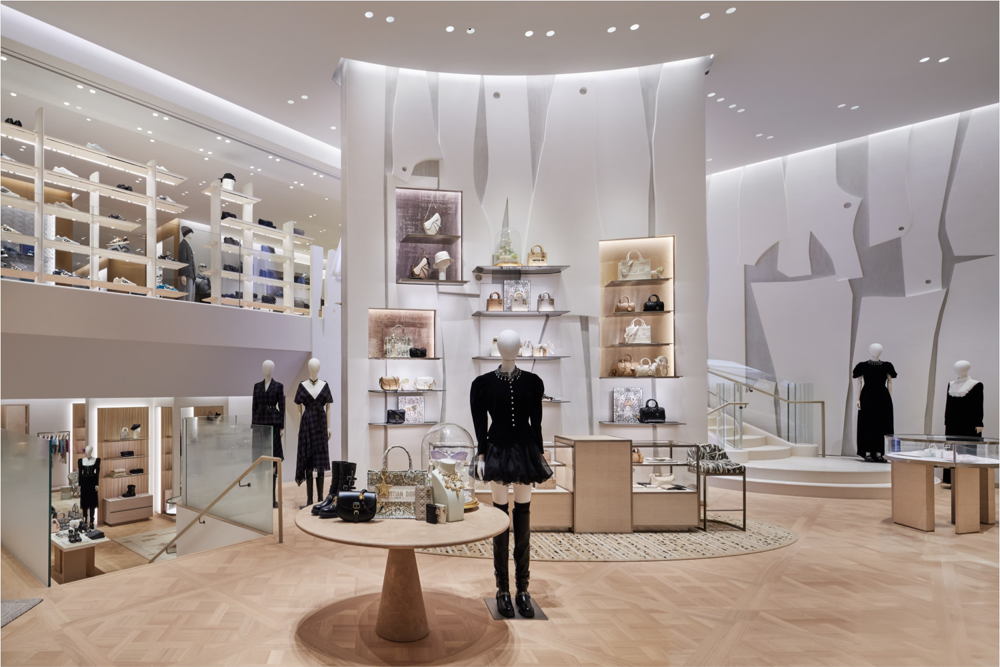
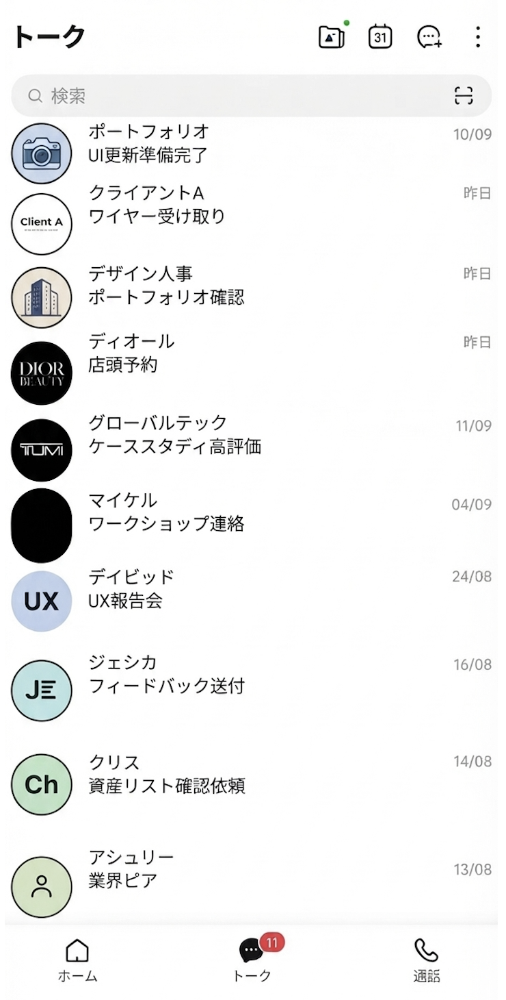
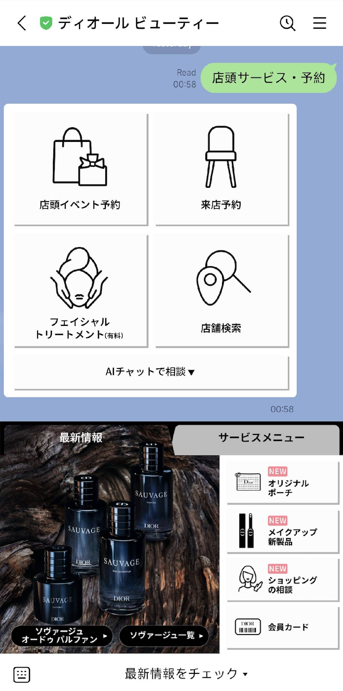
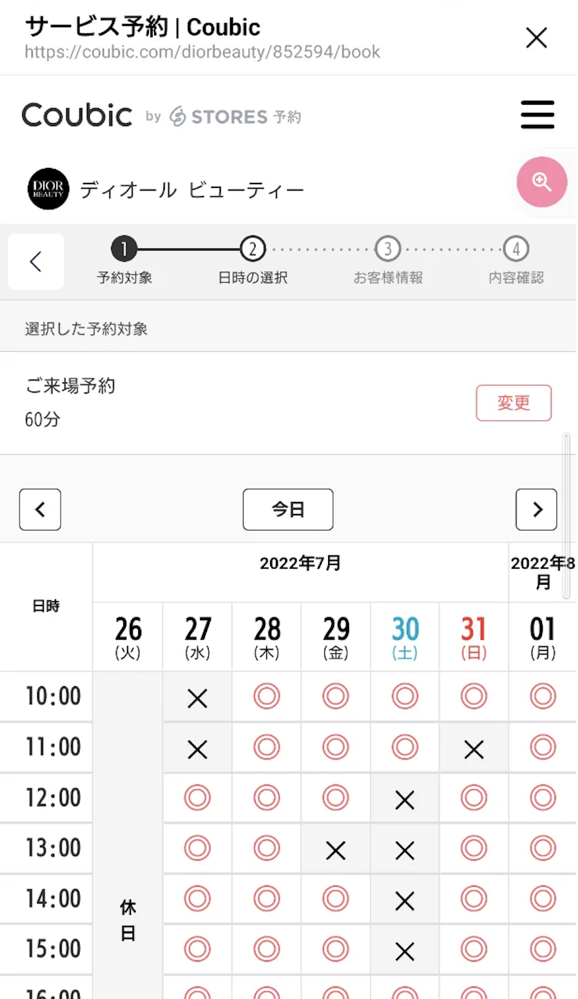
The Solution
To launch each Dior boutique with its own appointment experience, we built a configurable booking platform, an admin interface, and supporting infrastructure. Each store configures its own slot patterns and surveys, no new development required. The result: every boutique gets a branded, ready-to-book experience from opening day.
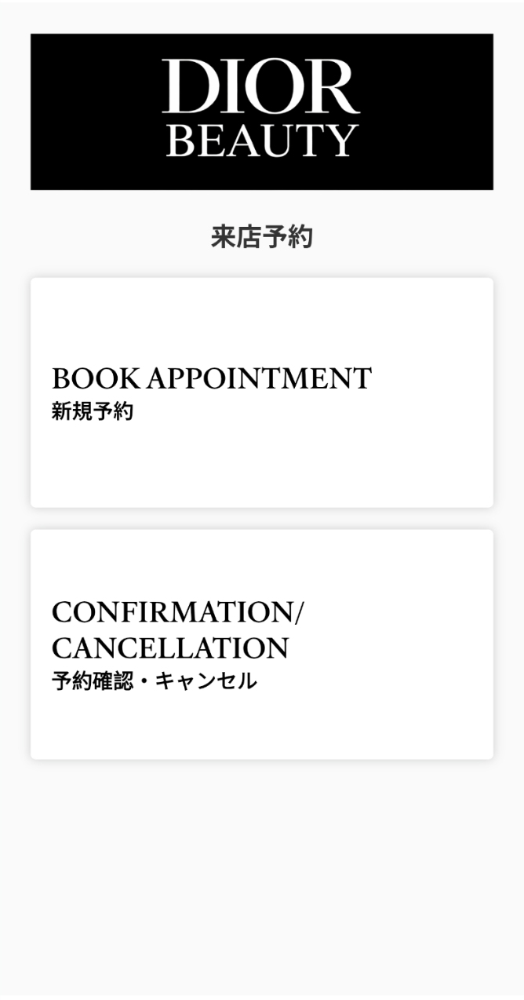
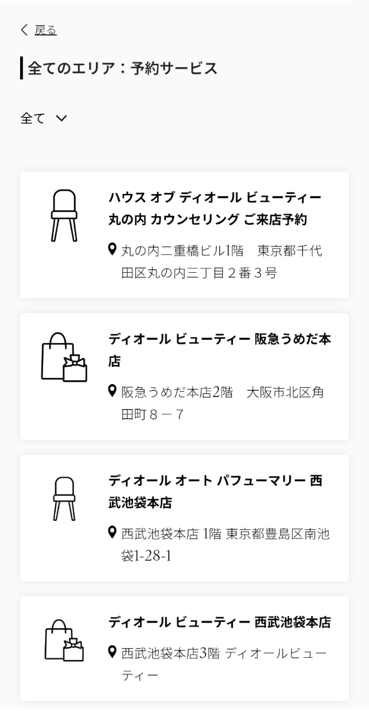
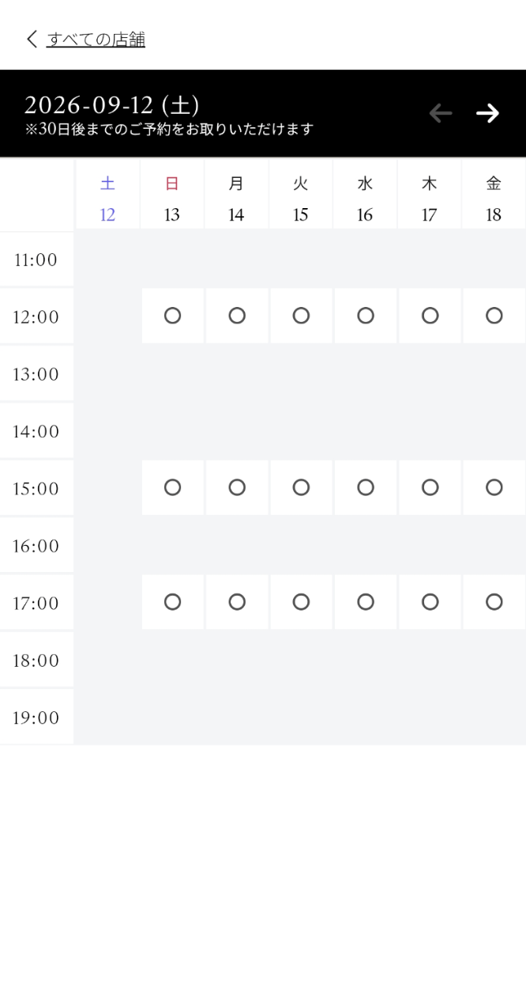
Appointment Platform
The configuration platform lets boutique staff set custom slot booking patterns for their store, without engineering support. Staff can also build custom surveys to attach to each appointment type.
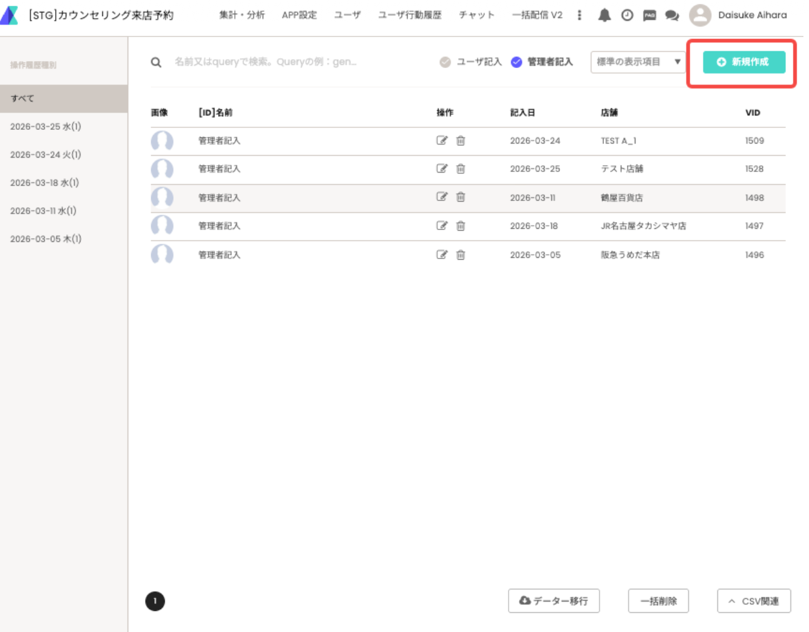
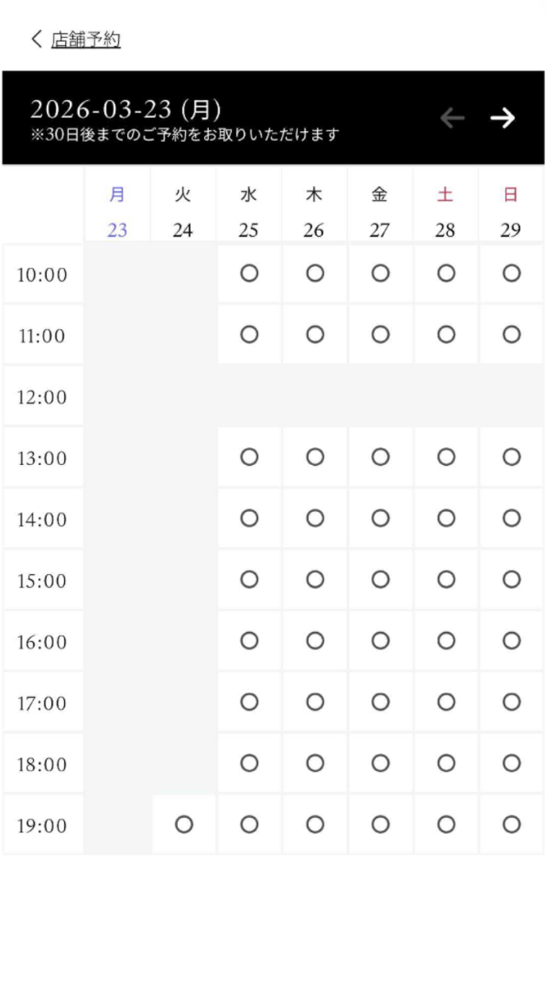
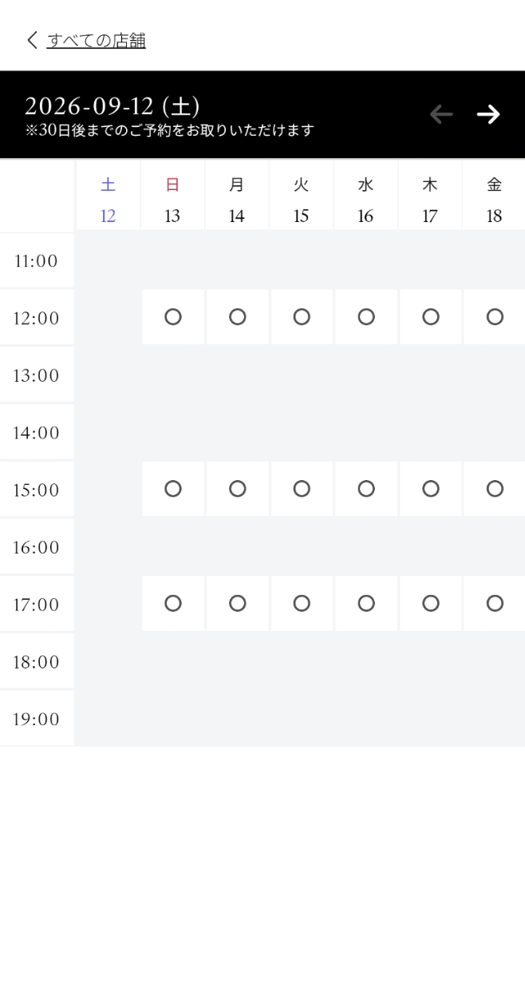
My Duties
As Project Manager, I coordinated cross-functional stakeholders from scope through release, ensuring deliverables met required standards at each stage of the software development lifecycle.
Stakeholders
Coordinated a cross-border team across Dior, engineering, design, and QA.
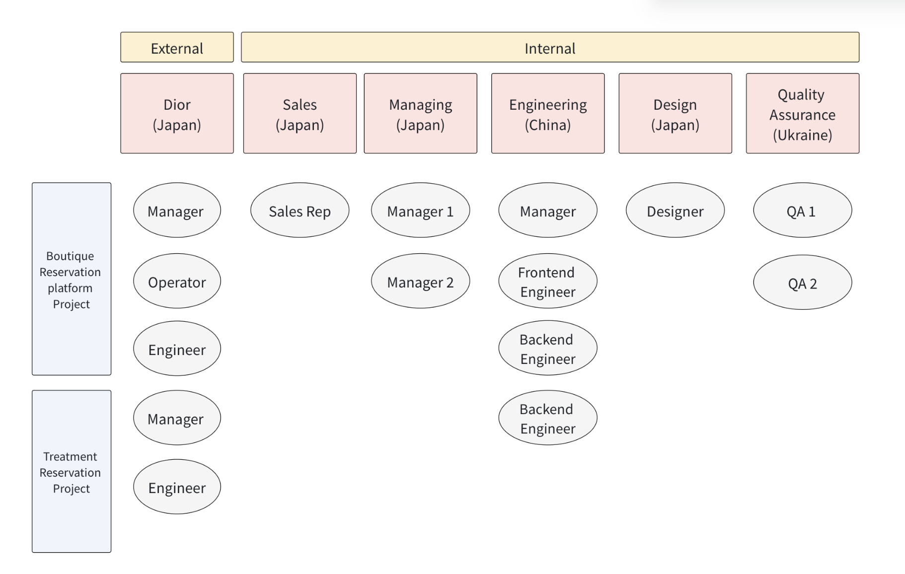
Userflow
Directed the teams to verify the full booking and cancellation flow, from store selection to notification.
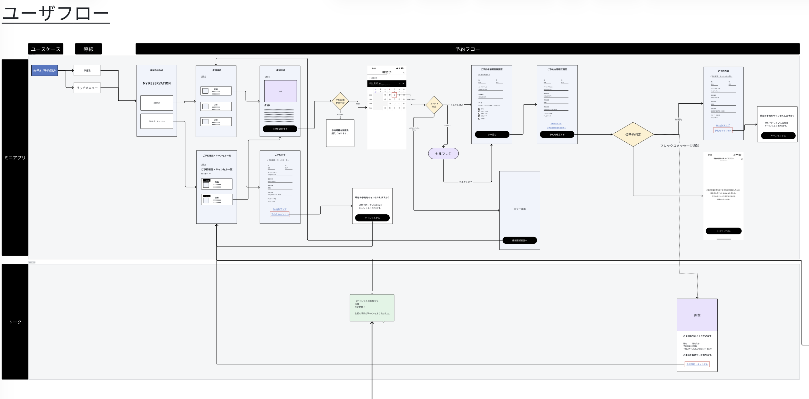
Requirement
Wrote the store-selection and admin requirements, tracking dropped scope and engineers' open questions.
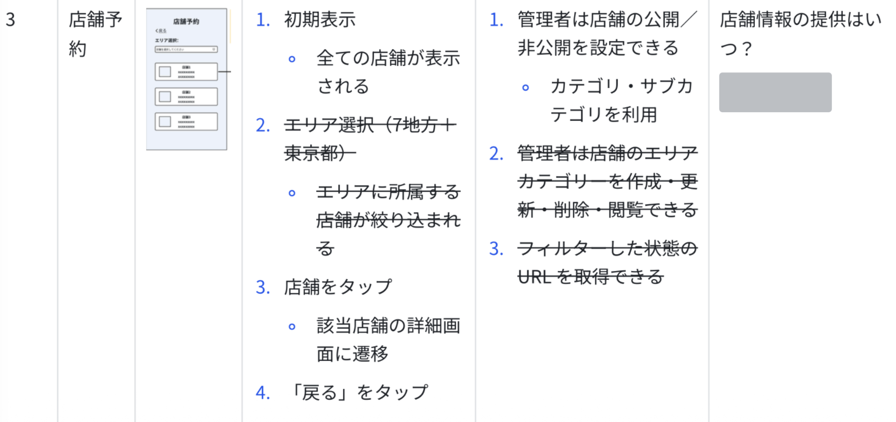
Communication
Briefed QA on test-case creation with linked specs and a fixed deadline.
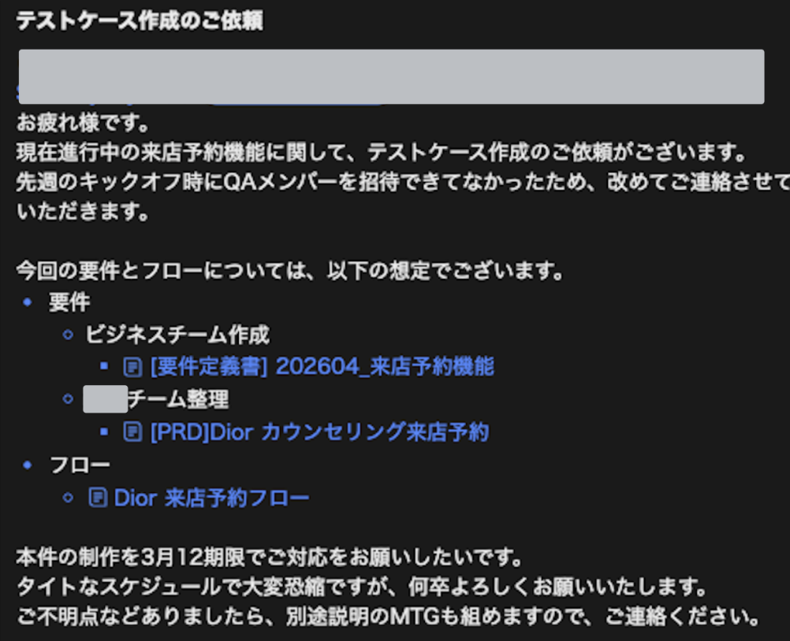
Design Assets
Specified each boutique's assets and message templates during development, down to sizes and copy, for the client to prepare.
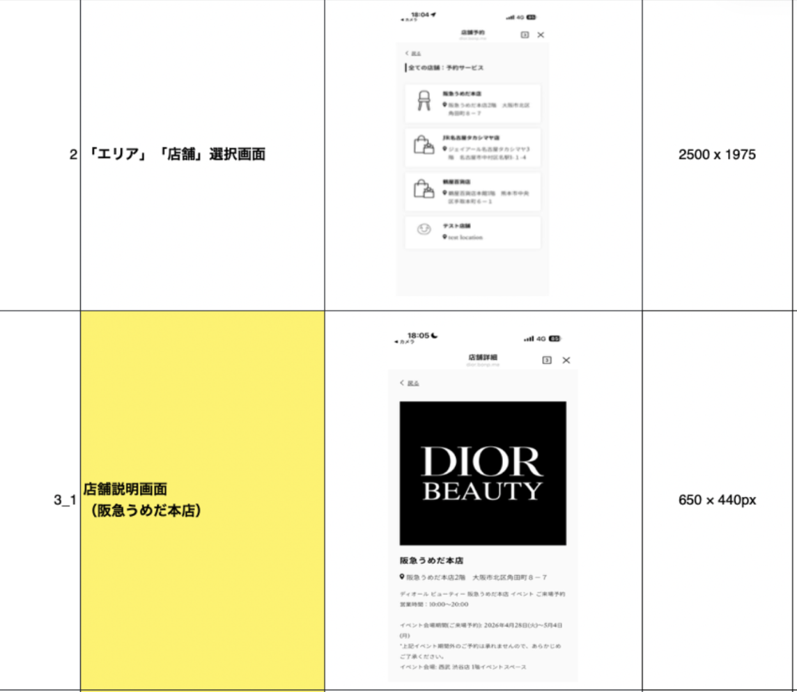
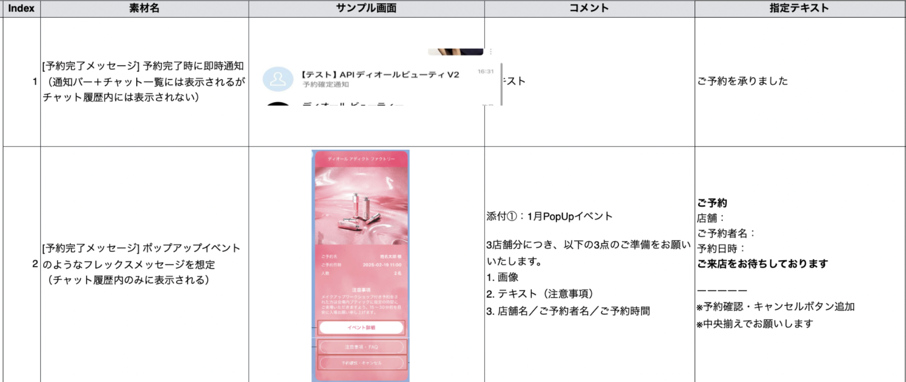
Quality Assurance
Fixed a booking failure where Dior members couldn't be verified, traced to an intermittent vendor API issue.
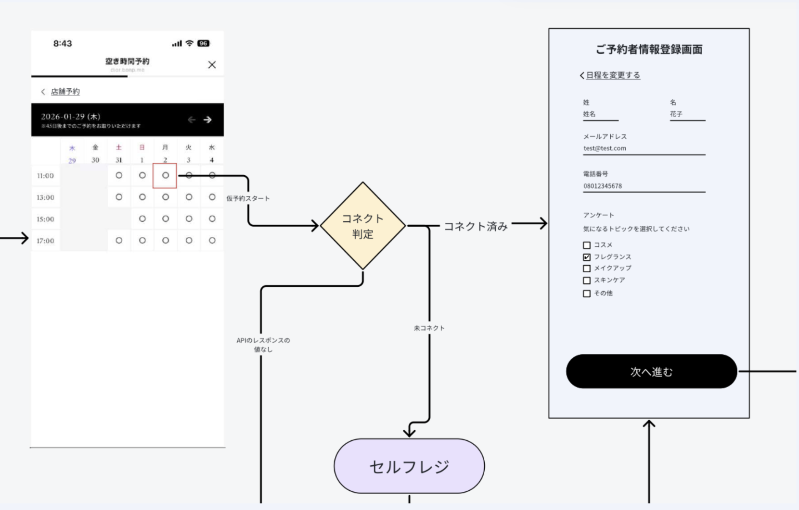
Tracked client-reported bugs and drove fixes with engineering and QA.
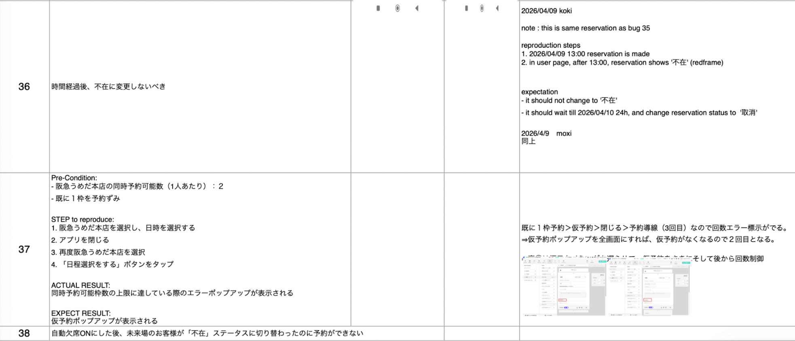